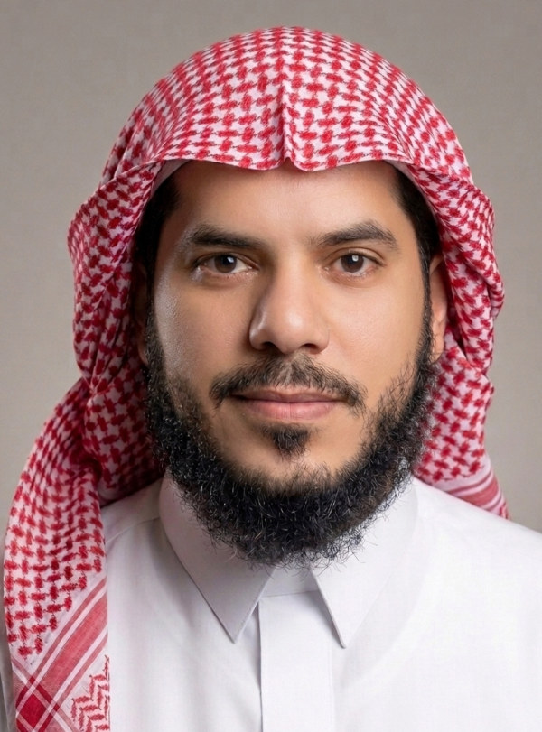

باحث في السُّنَّة النبوية وعلومها · محقِّق ومفهرس مخطوطات
د. عبد الرحمن صحراوي
عبد الرحمن بن محمد الصغير صحراوي
عناية بعلم العلل ونقد الحديث، والموطأ والمدرسة المالكية، وتراث علماء الجزائر في الحديث النبوي، وقضايا السنة المعاصرة.
باحث في السُّنَّة النبوية وعلومها · محقِّق ومفهرس مخطوطات
عبد الرحمن بن محمد الصغير صحراوي
عناية بعلم العلل ونقد الحديث، والموطأ والمدرسة المالكية، وتراث علماء الجزائر في الحديث النبوي، وقضايا السنة المعاصرة.

باحثٌ متخصِّص في السُّنَّة النبوية وعلومها، حاصلٌ على الدكتوراه في تخصُّص السُّنَّة وعلومها بكلية الشريعة وأصول الدين بجامعة الملك خالد، نال بها تقدير «ممتاز مع مرتبة الشرف» مع التوصية بطباعة الرسالة، وعلى الماجستير في الحديث وعلومه بتقدير «ممتاز» مع التوصية بطبع رسالته وتداولها بين الجامعات.
له خبرةٌ راسخةٌ في التخريج ودراسة الأحاديث المُعلَّة، وتحقيق المخطوطات وفهرستها، وتنسيق الأبحاث العلمية. عمل في التعليم والبحث الشرعي وفهرسة المخطوطات بفريق البحث العلمي بالمسجد النبوي الشريف، حافظٌ لكتاب الله تعالى، وله جملةٌ وافرةٌ من البحوث العلمية المحكَّمة في تخصُّصه.
محدَّثة إلى 20 نوفمبر 2026م
وللباحث 15 بحثًا قيد التحكيم في مجلات محكَّمة، تُضاف عناوينها هنا بعد قبولها.
لشيخ الإسلام زكريا الأنصاري (ت 926هـ)، دراسةً وتحقيقًا. رسالة ماجستير في الحديث وعلومه بجامعة الوادي، نالت تقدير «ممتاز» مع التوصية بالطباعة والتداول بين الجامعات.
بالسند المتصل المسلسل
مُحكِّم (مراجع) في المجلات العلمية الآتية
للتواصل العلمي والاستفسار عن البحوث
نسبة الزوار من كل بلد، وتتحدث تلقائيًّا.